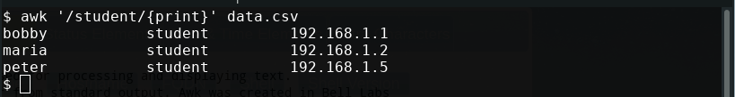
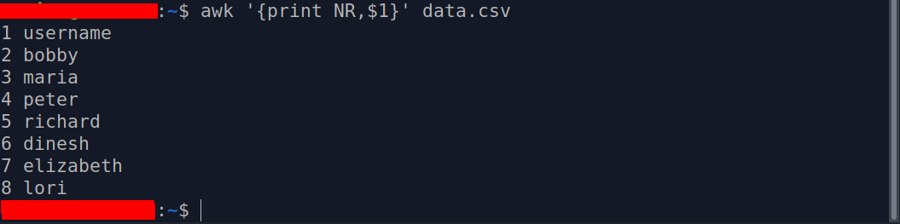
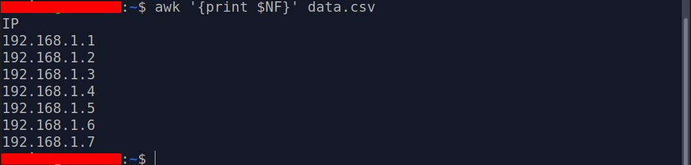
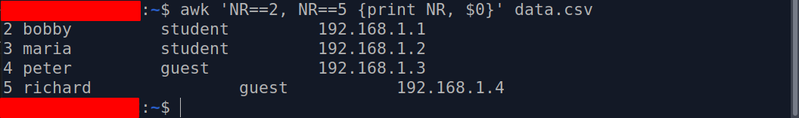
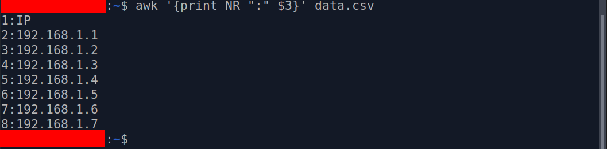
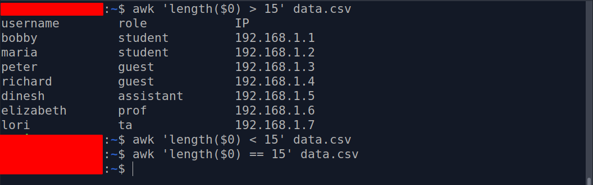

What is Linux?
Linux is a kernel. A kernel is the core of the operating system that is responsible for starting/stopping other programs, handling requests for memory, accessing disks, and managing network connections. Abstractly, people use the term Linux to refer to a given Linux Distribution which is defined as a collection of software (with the Linux Kernel at the core) that together makes an operating system. Linux is a multitasking, multi-user, multipurpose operating system and the largest collaborative project in the history of humankind. Linux is a modular system which means that all its components are separate from each other which is what makes it the preferred operating system for embedded devices. Linux is the most used operating system in the world because most web servers run on Linux. In addition to its dominance in the Internet’s backbone, Android, Chromebooks (and other Google devices), Amazon fire devices, even Tesla cars use the Linux Kernel in their operating systems.

A complete Linux system package is called a Linux Distribution. There is over 150 Linux distribution available to meet any computing requirement you could have. There are two main Linux distributions that branch out most of the other distros out there: Debian and Redhat. There are other independent distros like Slackware and Arch Linux. The main difference between distribution is the way they package and manage software. There are other differences like the init system. However, since they all share the same Kernel, they have more in common than they differ. Most Linux distributions follow the Filesystem Hierarchy Standard and pack the Bash shell as the default shell.
Basic Linux Commands
Moving Around The filesystem
A filesystem defines the way files are stored and organized in an operating system. Linux, like Unix, has a root directory from where all the files are arranged. Linux follows the Filesystem Hierarchy Standard (FHS) which specifies requirements and guidelines for file and directory placement in UNIX-like operating systems.

Before you start leaning the Linux Command Linux Interface (CLI), it is important to understand the concept of absolute and relative paths. A file path is a unique location to a file or a folder in a file system. An absolute path is defined as the specific location of a file starting at the root of the file system. A relative path on the other hand, starts with a directory that is related to the present working directory. to better ilustrate this concept, lets asume that you want to open a file located in the Downloads directory. The file name is games.txt. The absolute path of games.txt is: /home/user/Downloads/games.txt. If your present working directory is your home directory, the the relative path to games.txt is: Downloads/games.txt. Absolute paths can be used anywhere in the filesystem while relative path only work from the directory that they are relative to.
To navigate the filesystem from the CLI all you need to know are 3 commands: pwd, cd, and ls. The pwd command displays the present working directory. Pwd is used to know where you are at any time. The cd command is used to change from one directory to another. Cd is the main movement command since it allows you to change your present working directory. The cd command can use absolute path, regular path, or no path at all if the user wants to go to their home directory. Sometimes you want to see whats inside a particular directory. This is called listing the content of a directory. Other times you want to see some information about a file or a directory such as the size of the file or who owns it. For all of these scenarios we use the ls command.
PWD Examples:
- Display where you are: pwd
CD Examples:
- Change your present working directory to another: cd /etc/rules.d<
- Change directory to the previous present working directory.cd -
- Change directory to 1 directory back in the directory tree.cd ../
- Change directory to 3 directory back in the directory treecd ../../../
- Change directory to your home directory Option 1: cd Option 2: cd ~ Option 3: cd $HOME
LS Examples:
- Long list all the files including hidden files. ls -la ~/Downloads/
- List all the files recursivel ls -R ~/Downloads/
- List all the files in a given directory sorted by last modified. ls -t ~/Downloads/
- List all the files in a given directory sorted by file size ls -S ~/Documents
- List all the files in a given directory sorted by extension ls -X ~/Documents
- List all the files in a given directory sorted by name in reverse order ls -R ~/Documents
- List all the options of the ls command ls --help
Managing files and directories
Now that you know how to move around the filesystem, it is time to learn how to manage files. File management in the CLI involves creating files/directories, moving and copying files, and removing files and directories.
mkdir is used for creating a single directory or multiple directories.To create a directory with mkdir type: mkdir + the name of the directory. To create multiple directories, separate each directory name with a space. You can create directories in the present working directory or in a different directory by using an absolute path or relative path. You can create a directory with a space in its name using the escape character (\) or by surrounding the name in quotation marks (‘ ‘ or “ ” ). If you try to create a directory that already exists, you will get an error notifying you that the file already exists.
MKDIR Examples:
- Create a directory in the present working directory mkdir wallpapers
- Create a directory in a different directory using relative path mkdir wallpapers/ocean
- Create a directory in a different directory using absolute path mkdir ~/wallpapers/forest
- Create a directory with a space in the name mkdir wallpapers/new\ cars mkdir wallpapers/’cities usa’
- Create a directory with a single quote in the name mkdir wallpapers/”majora's mask”
- Create multiple directories mkdir wallpapers/dir1 wallpapers/dir2 wallpapers/dir3
- Create a directory with other directories at the same time mkdir -p wallpapers_others/cars
To create files we use the touch command. Although the touch program was not designed for creating files (in fact it is an unintended result) it was designed for updating files accesses time.
TOUCH Examples:
- To create a file called list touch list
- To create several files: touch list_of_cars.txt script.py names.csv
- To create a file using absolute path: touch ~/Downloads/games.txt
- To create a file using relative path (assuming you pwd is you home directory): touch Downloads/games2.txt
- To create a file with a space in its name: touch “list of foods.txt”
To remove files we use the rm command. Rm by default does not removes directories. To remove a directory use rm with the -r option. In Linux and other Nix systems you cannot remove non empty directories. To remove empty directories use the rmdir command. To remove non-empty directories use rm -r + directory name or directory absolute path.
RM Examples:
- Remove a file rm list
- Remove a file and prompt confirmation before removal rm -i list
- Remove all the files inside a directory and prompt before removing more than than 3 files rm -I Downloads/games/*
- Remove an empty directory rmdir Downloads/games
- Remove an non-empty directory rm -r Downloads/games
Part of working with files is moving them around. For this purpose we use the mv commad. Also, the mv command is used for renaming files. When you want to move a file from one place to another, you use the mv command with the following formula: mv + source file(s) + destination. When you want to rename a file, you can use the same formula. Mv can move and name files at the same time.
Mv Examples (Moving files and directories)
- To move a file from a directory to another using relative path mv Downloads/homework.pdf Documents/
- To move a directory from one directory to another using absolute path sudo mv ~/Downloads/theme /usr/share/themes
- To move multiple directories/files to a different directory mv games/ wallpapers/ rockmusic/ /media/student/flashdrive/
MV Examples (renaming files)
- To rename a file mv homework.docx cis106homework.docx
- To rename a file using absolute path mv ~/Downloads/homework.docx ~/Downloads/cis106homework.docx
- To move and rename a file in the same command mv Downloads/cis106homework.docx Documents/new_cis106homework.docx
What if you want to copy the files instead of moving them? in this case we use the cp command. The cp command follows the same formula as the mv command: cp + files to copy + destination. When moving directories cp commands requires the -r or -R argument.
CP examples:
- To copy a file cp Downloads/wallpapers.zip Pictures/
- To copy a directory with absolute path cp -r ~/Downloads/wallpapers ~/Pictures/
- To copy the content of a directory to another directory cp Downloads/wallpapers/* ~/Pictures/
- To copy multiple files in a single command sudo cp -r script.sh program.py home.html assets/ /var/www/html/
Working with text files
Working on the CLI involves more than just shuffling files around. In Linux, everything can be done on the command line and one of the greatest strength of the CLI is its large amount of commands that can be used to work with text files.
The Cat Command
The cat command is short for concatenate and it is used for concatenating files and displaying the content of a text file. To use the cat command follow this formula: cat + option + filename
CAT Examples:
- Display the contents of a file cat file.txt
- Concatenate several files cat ~/Documents/file1.txt ~/Downloads/file2.txt
- Display the contents of a file with line numbers cat -n /proc/meminfo
- Create a file cat > newfile.txt
- Display the content of a file with $ to indicate the end of each line cat -E /etc/passwd
The Tac Command
The tac command is used for concatenating and displaying the content of a file in reverse order. To use the tac command, use the following formula: tac + option + file name
- Display the content of a file in reverse order tac /etc/passwd
- Separate the contents of a file using a string inside the file tac -s file.txt “ip”
- Concatenate several files tac ~/Documents/file1.txt ~/Downloads/file2.txt
The more and less commands
Both more and less are pager programs. A pager program is used for loading the output of a large program or a text file one page at the time. To use the more use the following program: more + option + file or command output To use the less command use the following formula: less + file
Examples of the more and less command
TAC Examples:
- load a text file more program.py
- Pass the output of a command lshw | more
- Open multiple files (use :n for the next file or :p for the previous file) more file*
- Open a file at the first of the occurrence a string more +/^system file.txt
- Open a file at a given line number more +50 access.log
- Load a text file less program.py
The Head Command
Displays a given number of lines or bytes of a file. If no option given it displays the fist 10 lines of a file. To use the head command, use the following formula head + option + file
HEAD Examples:
- Print the first 10 lines of a file head /etc/passwd
- Prints the first n number of a file head -5 /etc/passwd
- Prints the n number of given bytes of a file head -c 100 /etc/passwd
- Suppress the filename when more than one file is given head -q /etc/passdwd file.txt
The Tail Command
Displays the last 10 lines of a given file.
TAIL Examples:
- Print the last 10 lines of a file tail /etc/passwd
- Prints the last n number of a file tail -5 /etc/passwd
- Prints the n number of given bytes of a file tail -c 100 /etc/passwd
- Suppress the filename when more than one file is given tail -q /etc/passwd file.txt
- Display appended data tail -f access.log
The Cut Command
The cut command is used to extract a specific section of each line of a file and display it to the screen. To use the cut command, use the following formula: cut option + file
CUT Examples:1
- Cut n number of bytes per line (1 byte = 1 character). This command will cut byte 1 2 3 4 5 of each line cut -b 1,2,3,4,5 usernames.txt
- Cut a range of bytes per line cut -b 1-5 usernames.txt
- Cut a by characters. Use this command to ensure that cut uses characters. There instances in which a character is more than 1 byte long. This depends on the character encoding used to translate between characters and bytes. For example, UTF-32 represents each character with 4 bytes, whereas, UTF-8 uses between 1 and 4 bytes. cut -c 1,2,3 ipaddresses.txt
- Cut a file using a delimiter like a comma or period. For example, the /etc/passwd file is separated by ":" the following command will display a list of users in your system. Cut -d ':' -f 1 /etc/passwd
- Cut a file using a delimiter but changing the delimiter in the output. For example, the following command ' will list all the users in your system and their login shell. cut -d ':' -s -f1,7 --output-delimiter="=" /etc/passwd
- Cut a file using a new line as a delimiter. For example, the following command will display all the users and their hashed password each in a new line. sudo cut -d ':' -f1,2 --output-delimiter=$'\n' /etc/shadow-
- Cut a file excluding a given field cut -d ',' --complement -s -f3 users.txt
The paste command
The paste command is used to joing files horizontally in columns. To use the paste command use the following formula: paste option + files
PASTE Examples:
- Merge files with paste paste users.txt ip.txt
- Merge files using a different delimiter paste -d ">"users.txt ip.txt
- Merge files using more than one delimiter paste -d ":-" users.txt ip.txt country.txt
The sort command
The sort command is used for arranging a text file in a particular order. The sort command is used for arranging a text file in a particular order. The sort command arranges a file line by line. Sorting works in the following way:
- Lines starting with a number appear first
- Lines starting with a letter are sorted alphabetically in ascending order
- Lines starting with a lowercase letter appear before uppercase
Examples of the sort command
- sort a file and save the output to a new file sort -o usersSorted.txt users.txt
- Sort in reverse order sort -r users.txt
- Sort a file with numeric data sort -n numbers.txt
- Sort a file with numeric data in reverse order sort -nr numbers.txt
- Sort by column number sort -k 2 users.txt
- Check if a file is sorted sort -c users.txt
- Sort and remove duplicated entries sort -u users.txt
The wc command
The wc command is used for printing the number of lines, characters, and bytes in a file. To use the wc command,follow this formula: wc option + file
WC Examples:
- Display the number of bytes in a file wc -c file.txt
- Display the number of characters in a file wc -m file.txt
- Display the number of lines in a file wc -l file.txt
- Display the number of words in a file wc -w file.txt
The tr command
The tr command is used for translating or deleting characters from standard output. To use the tr command use the following formula: command output | + tr + option + set + set
Regular Expressions character classes:
| POSIX class | Represents | Means |
|---|---|---|
| [:upper:] | [A-Z] | Upper case letters |
| [:lower:] | [a-z] | Lower case letters |
| [:alpha:] | [A-Za-z] | Upper and Lower case letters |
| [:alnum:] | [A-Za-z0-9] | Lower case, upper case, and digits |
| [:digit:] | [0-9] | digits |
| [:xdigit:] | [0-9A-Fa-f] | hexadecimal digits |
| [:punct:] | [.,!?:...] | puctuation |
| [:blank:] | [\t] | space and tabs |
| [:cntrl:] | n/a | control characters |
| [:graph:] | [^\t\n\r\g\v] | printed characters without spaces |
| [:print:] | [^\t\n\r\g\v] | printed characters including spaces |
| [:space:] | [ \t\n\r\g\v] | whitespace characters |
TR Examples:
- Translate . to , (or any other character) cat file.txt | tr '.' ',' file.txt
- Translate white space into tabs cat file.py | tr [:space:] '\t'
- Translate tabs into spaces cat file.py | tr -s "[:space:]" ' '
- Delete specified character (delete all uppercase letters) cat file.txt | tr -d '[:upper:]'
- Delete all characters except upper case letters cat file | tr -cd "[:lower:]"
- Convert all lower case characters to upper case characters cat file.txt | tr "[a-z]" "[A-Z]" or use: cat file.txt | tr "[:lower:]" "[:upper:]"
The diff command
The diff command comparares files and display the differences between them. To use the diff command, follow this formula: diff option + file + file
DIFF Examples:
- Display the difference between two filesdiff file1 file2
- Display the difference between two files only if the files are different diff -q file1 file2
- Display the difference between two files in column formatdiff -y file1 and file2
The find command
The find command is used for finding files in your system. To use the find command, follow this formula: find + start directory + option + file name to search
FIND Examples:
- Find a file in the home directory find /home/$USER -name "program.py"
- Find a file in the home directory ignoring case sensitivity find /home/$USER -iname "program.py"
- Find a directory find / -type d -name "games"
- Find files using their permissionsfind / -type f -perm 644
- Find and remove files find /home/$USER -type f -name "*.docx" -exec rm -f {} \;
- Find empty files find /home/$USER -type -f -empty
- Find empty directories find /home/$USER -type -d -empty
- Find hidden files find / -type -f name ".*"
- Find all files modified in last 7 days find / -atime 7
- Find all files modifed more than a week ago and less than a month find / -mtime +7 -mtime -30
- Find all files which size are 1GB find / -size 1024M
The sed command
The sed command is stream editor used for filtering and transforming text. To use the sed command, follow this formula: sed + option + sed command + file
SED Examples:
- Substituting a string with another sed 's/old/new/' file.txt
- Substituting n position of a string with another sed 's/old/new/5' file.txt
- Substituting all occurrences of a string with another sed 's/old/new/g' file.txt
- Substituting all occurrences of a string with another after a given position sed 's/old/new/5g' file.txt
- Substituting a string with another on a specific line sed '5 s/old/new/' file.txt
- Substituting a string with another on a range of lines $sed '1,5 s/old/new/' file.txt
- Delete a specific line of a file sed '2d' file.txt
- Delete a range of lines sed '3,8d' file.txt
- Display a range of lines sed -n 8,12p file.txt
- Display all the content of a file except a range of lines sed -n 8,12d file.txt
- Display all the content of a file except the last line sed $d file.txt
- Add an empty line after every non blank line sed G file.txt
- Use multiple sed commands sed -e 's/old/new/g' -e 's/windows/ubuntu/' file.txt
- Delete all the lines that start with a given string and ends in another given string sed -e 's/start.*end//g' file.txt
- Removing all commented lines and empty lines on a given script sed -e 's/#.*//;/^$/d' file.sh
- Removing comments only sed -e 's/#.*//' file.sh
The Awk command:
Awk is a scripting language used for processing and displaying text.
Awk can work with a text file or from standard output. Awk was created in Bell Labs during the 70s by Alfred Aho,
Peter Weinberger, and Brian Kernighan and its name comes from its authors' initials. There are several
implementations of Awk: nawk, mawk, gawk, and busybox.
From Stackoverflow by the user: Gilles 'SO- stop being evil'.
-
AWK is a programming language. There are several implementations of AWK (mostly in the form of interpreters).
AWK has been codified in POSIX. The main implementations in use today are:
- nawk (“new awk”, an evolution of oawk, the original UNIX implementation), used on *BSD and widely available on Linux;
- mawk, a fast implementation that mostly sticks to standard features;
- gawk, the GNU implementation, with many extensions;
- the Busybox (small, intended for embedded systems, not many features). If you only care about standard features, call awk, which may be Gawk or nawk or mawk or some other implementation. If you want the features in GNU awk, use gawk or Perl or Python.
AWK Examples:
- Print all lines that contain a given string awk '/student/{print}' data.csv 
- Awk can split a file into fields. It does it using field variables represented by their position in
the line. For example, the sentence "Bill plays pong" will be split in $1="Bill" $2="plays" $3="pong".
awk '{print $1,$3}' data.csv

- Using the awk NR command to keep count of the lines awk '{print NR,$1}' data.csv 
- Using the NF variable, awk prints the last field awk '{print $NF}' data.csv 
- Using the NR command to print specific lines awk 'NR==2, NR==5 {print NR, $0}' data.csv 
- Print specific lines with separator awk '{print NR ":" $3}' data.csv 
- Count the number of lines in a file awk 'END {print NR}' data.csv
- Print all the lines that have more, less, or an exact number of characters (>,<,==) awk '{length($0) > 15}' data.csv 
Important note: Awk is extremely powerful. If you want to master it, here are some resources:
CLI Text Editors
Everything in Linux is a file, therefore, you will find your self editing config files or source code very often. This is reason why it is cannonical to learn how to edit text in the command line. Linux has a large number of CLI text editors. Te most popular are:
Tutorial for learning vim
Tutorial for learning nano
Tutorial for learning emacs
The general advise for command line text editors is to learn the basics of vim and then master at least 1 CLI text editor. Learning vim is important because when linux is in Single User mode or has crashed, the only text editor available is Vi.
Getting System Information
The following is a list of commands that you can use to get information about your system
- uname :Display basic information about the operating system name and system hardware.
Example:
Display all basic information uname -a - lshw :Displays detailed information of the system’s hardware configuration.
Note: This command can display more information if run with sudo.
Example:
Display all information sudo lshw - lsusb :Display the information about USB buses and the devices connected to them.
Example
Display all connected USB devices lsusb - lscpu and lspci :Lscpu is used for displaying CPU information
and Lscpu is used for display PCI bus information.
Example:
Display information about CPU lscpu
Display information about PCI Buss lspci
Docker commands
Run a new container
- Start a container from an image docker run image-name
- Start a container with a name assigned docker run --name container_name container_image
- Start a container and map a port docker run -p host_port:continer_port image
- Start a container and map all ports docker run -P image
- Start a container in the background docker run -d image
- Start a container with an assigned hostname docker run --hostname hostname_for_image image
- Start a container with a dns entry docker run --add-host hostname:ip image
- Start a container and map a local directory into the container
docker run -v host-directory:target-directory image
Example:
docker run -v ~/website:/var/www/html/ apache2 - Start a container but change the entry point
docker run -it --entrypoint executable image
Example:
docker run -it --entrypoint bash nginx
Manage containers
- Show a list of running containers docker ps
- Show a list of all containers docker ps -a
- Delete a container docker rm container
- Delete stopped container docker container prune
- Stop a running container docker stop container
- Start a stopped container docker start container
- Copy a file from a container to the host
docker cp container:source target
Example:
docker cp web:/index.html index.html - Copy a file from the host to a container
docker cp target container:source
Example:
docker cp index.html web:/index.html - Start a shell inside a running container
docker exec -it container executable
Example:
docker exec -it web bash - Rename a container docker rename old-name new-name
- Create an image out of a container docker commit container
Manage images
- Download an image docker pull image
- Upload an image to a repository docker push image
- Delete an image docker rmi image
- List all images docker images
- Delete dangling images docker image prune
- Delete all unused images docker image prune -a
- Build an image from a Dockerfile docker build Directory
- Tag an image docker tag image newimage
- Build and tag an image from a docker file docker build -t image directory
- Save an image to .tar file docker save image > file.tar
- Load an image from a .tar file docker load -i file.tar
Info and stats
- Show the logs for a container docker logs container
- Show stats of running container docker stats
- Show processes of a container docker top container
- Show installed docker version docker version
- Get detailed info about an object docker inspect name
- Show all modified files in container docker diff container
- Show mapped ports of a container docker port container